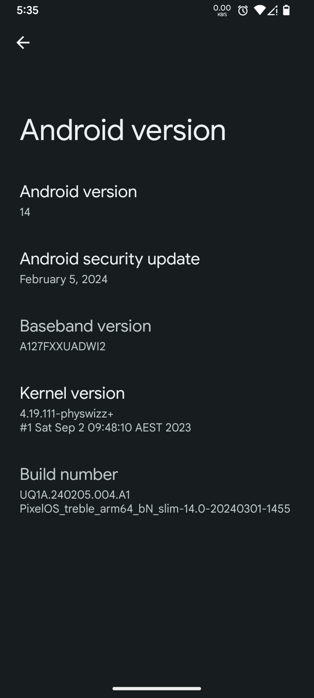
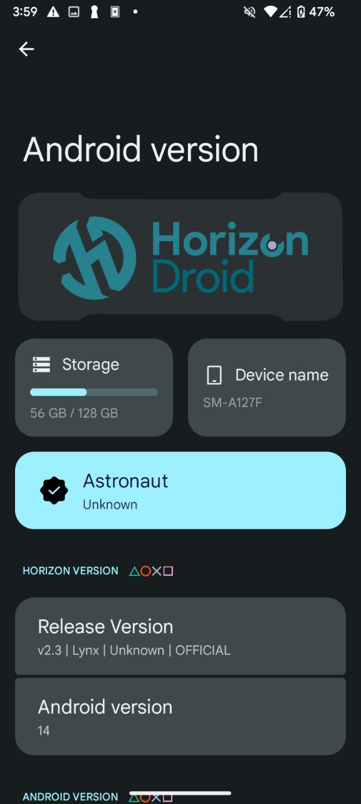
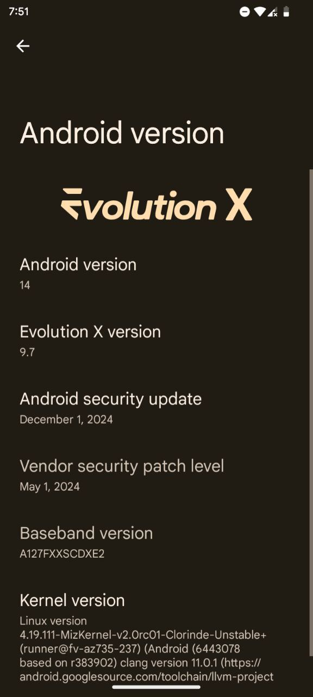

A Tool to set your Android device to run Custom Android Flavours
This tool will edit your device's super.img to replace the stock system.img and insert any GSI of your choice
From Phhusson, Mystic GSI, ErfanGSI and more
Runs on GitHub Actions
This online patcher tool runs on GitHub Actions for easy and convenience
More info
Supports SFTP and GitHub Releases Upload
Super-patch Action supports uploading processed files to any SFTP servers or Github Releases.
(Note that GitHub releases has a file-size limit restrictions up to 2048MiB, so SFTP serves as an 'alternative' measure, refer to the documentation for more info why.)
Screenshot of Devices
Below are some screenshots of devices that are using the patched super.img and its ability to make the device run a custom Android flavour


